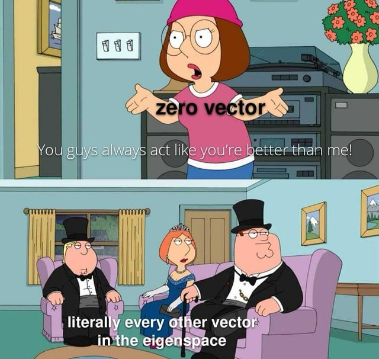

When can we recover an evolutionary tree's primary split from only a sparse sample of the similarity matrix — and how few entries suffice?
Itay Gonnen
Trees, aligned sequences, the split, top-down spectral recovery.
Recover the split from only a sparse sample of the similarity matrix.
From genetics to a block matrix: CBM & HBM models.
Balanced succeeds — Kingman gets messy. Motivation for theory.
Imbalance \(\eta\) and structural margin \(\rho\) drive the spectral quantities.
Perturbation + Neumann + per-node Bernstein \(\Rightarrow\) recovery rate.
Split by \(\eta\) and by \(n\); empirical results meet the theory.
A rooted binary tree \(T=(V,E)\). The \(m\) terminal nodes (leaves) \(X=\{x_1,\dots,x_m\}\) are species we observe today.
The \(m-1\) internal nodes \(H=\{h_1,\dots,h_{m-1}\}\) are unobserved ancestors — we never see them directly.
Everything we know comes from data at the terminals.
Cutting a single edge of the tree partitions the leaves into two groups:
Each side is a clan — the leaf set of one root subtree (the unrooted analogue of a clade).
We only observe a sparse random subset of \(S\), reweighted to be unbiased:
What is the minimal \(p\) for correct recovery w.h.p., and in what scale?
Because \(\mathbb E[\hat S]=S\):
So the question: how much does \(E_L\) move the Fiedler vector?
Under the three assumptions, cross-clan similarities collapse to a single constant \(\beta_0\):
The cross block \(\beta_0 J\) is rank-1 — that structure makes the spectrum tractable.

Itay Gonnen